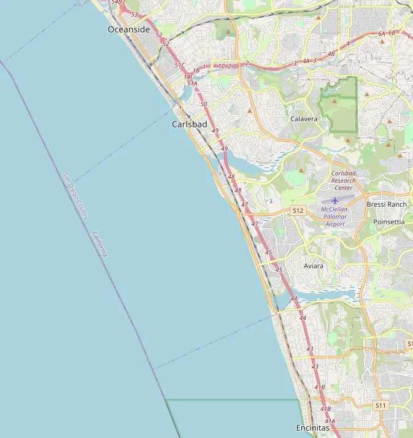

About Us
Bountiful Foods
We are a small business specializing in organic, locally grown foods. We are physically located in Carlsbad, California, however, we have many food trucks that cover the coastal area from Los Angeles to San Diego. We sells fruits and produce directly from the farmers in the area, but also uses some national and international suppliers. We are an owner-operated company that caters to walk in traffic at our storefront in Carlsbad and, of course, our food trucks. We deliver and manage those orders on the phone and via the website. The mission is to provide fresh and healthy food options, including organic, made to order, fruit drinks and fruit bags, to the local population and to tourists visiting the coastal areas.
Contact Us
Bountiful Foods
123 Carlsbad Street
Carlsbad, CA 92008
1-234-555-6789
Carlsbad, California

OpenStreatMap of Carlsbad, California